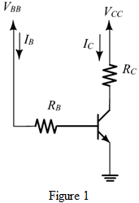
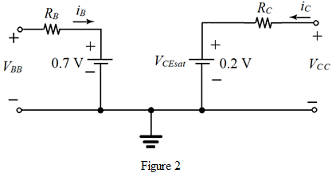
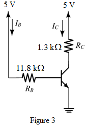

Given that .
Find the collector current  .
.
Substitute 0.2 V for .
Refer to the circuit in Figure P6.49 in the text book.
Redraw the circuit as shown in Figure 1.

The equivalent circuit is shown in Figure 2.

Given that .
Find the collector current .
Substitute 0.2 V for .
Obtain the expression for  .
.
Derive the expression for  .
.
Thus, the expression for  is .
is .
Derive the expression for the total power dissipated in the circuit.
Thus, the expression for the total power dissipated in the circuit is,
Substitute 5 V for  and 10 for .
and 10 for .
…… (1)
Consider the expression for the total power dissipated in the circuit.
Substitute for  .
.
Since limiting the power dissipation to no larger than 20 mW,

Substitute 5 V for  , 0.2 V for
, 0.2 V for  , and 10 for forced
, and 10 for forced  .
.
Find the value of by substituting for in the expression.
Using  tolerance, the approximated value of is,
tolerance, the approximated value of is,
Thus, the value of  is .
is .
Find the value of  .
.
Recall equation (1).
Substitute for  .
.
Using  tolerance, the approximated value of
tolerance, the approximated value of  is,
is,
Thus, the value of  is
is  .
.
Design the required circuit as shown in Figure 3.

Thus, the required circuit has designed as shown in Figure 3.